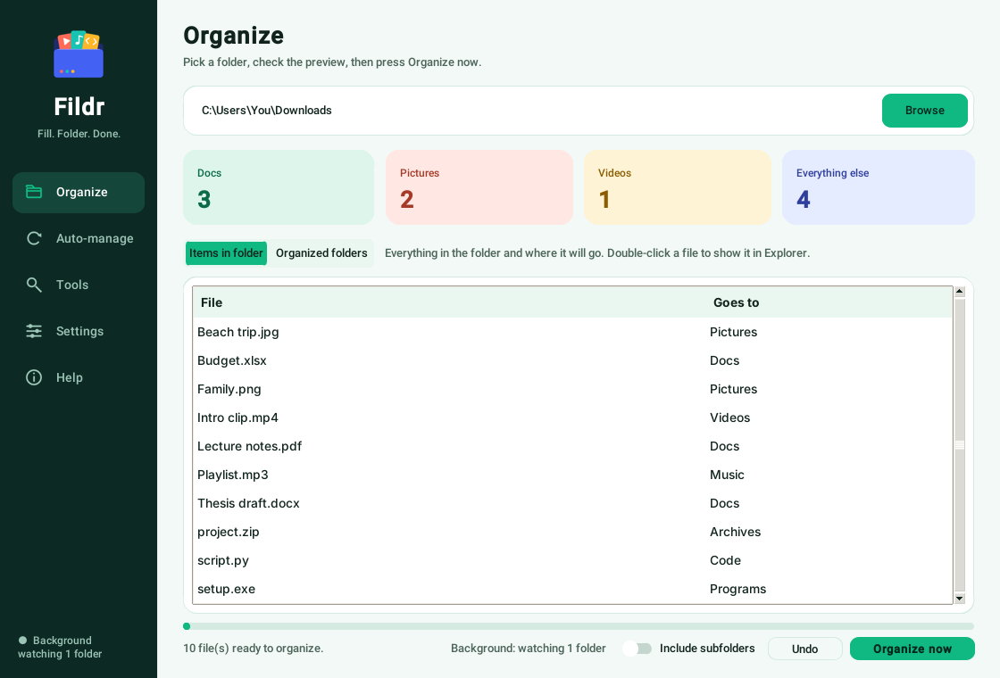
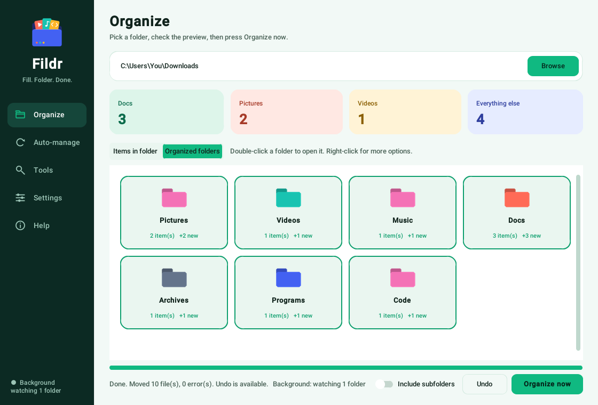
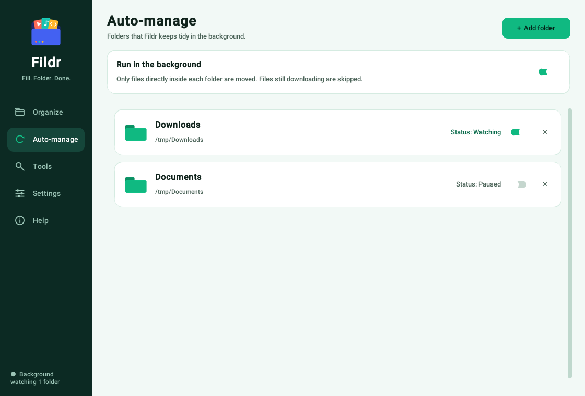

Fildr | Fill. Folder. Done.
Fildr puts your files into Pictures, Videos, Docs and more. Do it with one click, or let it keep Downloads tidy in the background.
Free · Windows 10 and 11 · Not available for Android

A short look at how Fildr cleans up a folder.
See your folders as tiles, and manage background folders with simple switches.


Simple to use, safe by design, and quiet when you don't need it.
Pick a folder and press Organize. Nothing moves until you say so, and you can see where every file will go first.
Choose folders like Downloads and Fildr sorts new files automatically, even when the window is closed.
A small box shows what moved and where, with a link that opens the folder with the files already selected.
Give each category folder its own icon, for one folder, several, or all folders with that name.
Changed your mind? Undo the last batch or restore older moves from the saved log.
Choose files or folders that are never moved. Restored files are excluded automatically.
Finds files with identical content, keeps the oldest copy and lets you move or delete the extras.
Lists your biggest files so you can free up space quickly.
Custom categories, sort by date, rename prefixes, an ignore list, and light or dark themes.
Three steps and you're done.
Open Fildr and pick the folder you want to tidy, such as Downloads.
See every file and the folder it will go to before anything moves.
Your files are sorted. Turn on Auto-manage to keep it that way.
No. Fildr is a Windows desktop app. It runs on Windows 10 and 11 computers only. You can read this page on your phone, but you need a Windows PC to use the app.
Windows SmartScreen or your antivirus may warn about new apps that aren't code-signed. Fildr is open source, so you can read the code on GitHub or build it yourself. Choose "More info", then "Run anyway" if you trust it.
No. Existing folders are merged, and files with the same name are renamed (like photo (1).jpg) instead of being replaced. You can also Undo.
Files that are still downloading, or open in another program like Word, are skipped until they're ready. Files on your ignore or exclusion list are skipped too.
Yes, we recommend the installer (Fildr-Setup.exe). It adds Fildr to your Start menu and search, and to Settings → Apps, so you can open it and uninstall it like any other program. No admin password is needed. Prefer not to install? Get the portable Fildr.exe from the GitHub Releases page and run it from any folder.
Download Fildr and give your folders a clean start.
⬇ Download for Windows